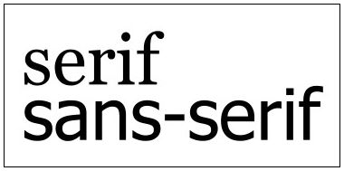
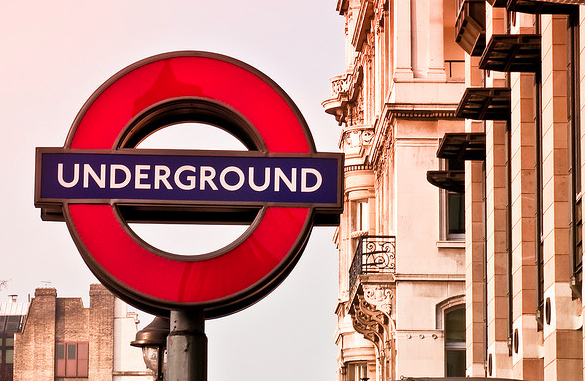
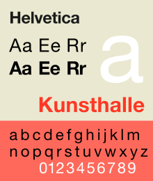
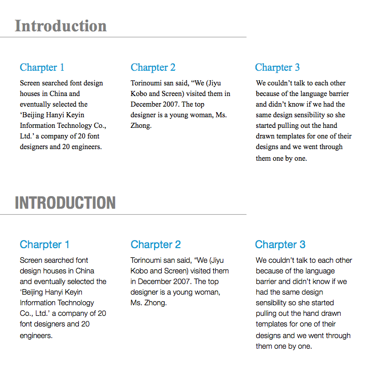
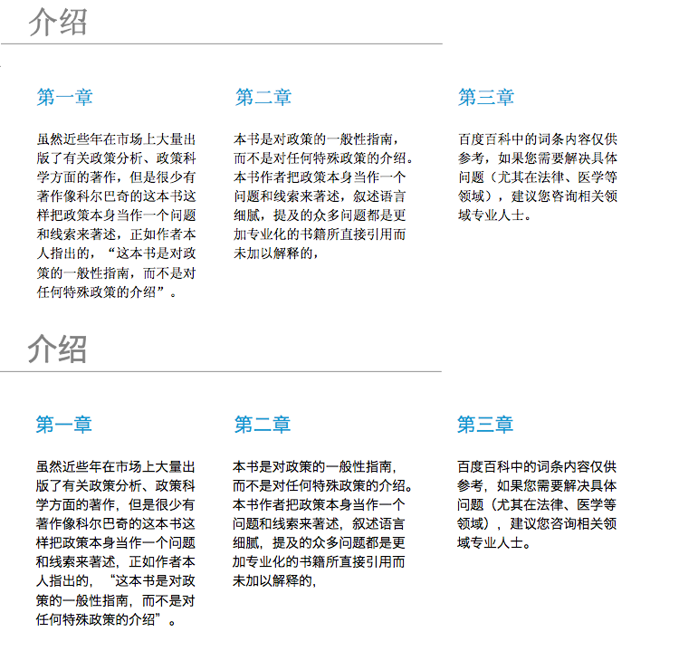

在信息设计里面，字体被认为是和使用者最重要的交互界面，好的字体直接影响到信息设计的表达。字体最基础的分类是有衬线体（serif）和无衬线体（sans serif），分别对应中文基础字体中的宋体和黑体。

传统的字体理论是：有衬线的serif字体更加适合长时间的阅读，如果翻看一本英文书籍，99%的正文内容都是serif族系的例如著名的Georgia；而无衬线则更适合标题性质，或者短的、易于识别的文字，比如伦敦地铁标识的字体Johnston，还有Apple iSO界面上广泛使用的Helvetica，都是典型的无衬线字体。

上图中伦敦地铁系统标识使用无衬线的Johnston字体
也许可以做这样的结论，serif字体更加适合长时间的阅读，而sans serif字体更适合短时间的识别、指引、和交互，同时随着Windows 7和iOS的普及，sans serif更广泛地被使用。从这个角度来看，sans serif字体或许更加适合PPT
个人喜好英文中较好的sans serif字体有：Helvetica Nene和Segoe UI。它们分别是iOS和Windows 7的基本字体，特别是Helvetica Nene，从Light到Condensed Black一应俱全，完全覆盖所有需求。

而中文中相对简单，在Windows下最好的是微软雅黑，1997年由微软联合方正创制，一直沿用到Windows7中文系统；而Mac下我一直使用的是Hiragino Sans GB字体，又叫作冬青黑体，MacOSX的内置字体，覆盖中国国家标准汉字达到28522字，有W3和W6两个磅值。
我们来对不同的字体进行一个比较，看看字体对整体的视觉表现有多大区别。首先是英文New Times Roman和Helvetica Nene的区别。

然后我们看看中文字体的表现区别。

带衬脚的New Times Roman或者宋体更加适合纸制印刷，而由无衬脚的Helvetica Nene或Hiragino Sans GB更加适合需要和屏幕进行交互的PPT。